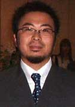
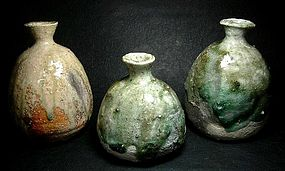
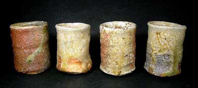
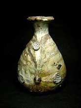
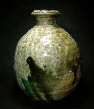
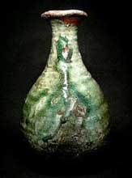
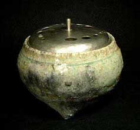
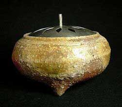

|
Furutani Kazuya
Japanese studio potter
 Furutani
Kazuya (b. 1976) is the son of Furutani
Michio (1946-2000), a Shigaraki potter greatly respected
for his work with the anagama, or wood-burning tunnel kiln. Before
his death, Michio could lay claim to having the best firings in
Shigaraki. Actually, it was Furutani who reintroduced the anagama
to Shigaraki since medieval times, and had built more anagama than
any other potter during his time (30 since 1970). His studies into
anagama led him to write a highly influential book as well. For
Furutani each kiln was built with a specific firing effect in mind
and it is no exaggeration to say he had the most varied, controlled
and amazing yohen effects Shigaraki has ever known. His sudden death
in 2000 shocked the ceramic art world.

However, his son Kazuya has spiritedly taken over the kiln of his
father/master, and his valiant firings have already labeled Kazuya
a master of the anagama, and certainly heir to the throne. A glance
at Kazuya's work will quickly call to mind the firings of his father
-in many ways, Kazuya has achieved what took his father decades
of experimentation to produce. He has learned well from his father,
even building his own kilns where all the current works were fired.

Born in Shigaraki, Kazuya went to Shigaraki High School focusing
on design. He then studied at the Yamaguchi Art School for 2 years,
then the Kyoto Prefecture Ceramic Art School. It was in Kyoto that
many told him to hurry back to Shigaraki to be with his ill father.
He apprenticed with his father for two and half years, yet much
was learned as a youngster by just 'being around' and you'll read
an interesting Japanese proverb to illustrate that point in the
first link below.

The secret to the Furutani family's pottery is through the Furutani
formula of clay processing (they have a cache of the best kinose
Shigaraki clay), kiln loading (Michio calls this the most important
aspect), and kiln firing -Michio's technique lives on in his son
Kazuya. Kazuya has also been studying 'The Way of Tea' for a few
years now and plans to introduce chawan next year.

Kazuya is a humble young man yet already has a large following
here in Japan. His yearly exhibitions in Tokyo have all been near
or full sell-outs. It's easy to see why and we hope you enjoy his
warm hi-iro fire colors and intensely beautiful hikidashi pulled
out of the kiln Iga pieces with mesmerizing greens.
Text & images courtesy of Robert Yellin, e-yakimono.net.
©
More Featured Artists
More Articles
|